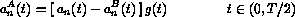
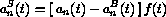
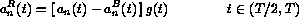
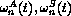
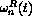

Heterodyne analysis is used to decompose a sampled sound into partials with time varying amplitude and frequency. This information is then used by the Csound object adsyn to reconstruct the signal via additive synthesis. More precisely, given a sound signal s(t) heterodyne analysis produces the approximation,
where and are the time-varying amplitude and phase, respectively, of partial n The instantaneous frequency is given by the rate of change of the phase,
The maximum number of partials, N is specified by the user, as well as the number of linear segments that describe and over the duration of the sampled sound. When the signal s(t) is quasi-periodic, such as the sound produced by instruments with a definite pitch, the amplitudes and frequencies vary much more slowly in time than the original signal (see figure 1), and approximation (1) becomes an efficient form of data compression. There are, however, other advantages. The values of and can be varied to obtain musically interesting effects. In this presentation, I will describe some tools for the manipulation of the heterodyne data. These tools are simple, but offer a lot of possibilities to the patient Csound user. There are other more sophisticated tools for spectral data analysis, such as Beauchamps sound analyzer package sndan and Serra's spectral modelling synthesis package for NeXT computers sms available through the internet. Formulation (1-2) can also be found in quantum-mechanics and geometrical optics under the name of WKBJ approximation (e.g. [1]), and can even be used to solve nonlinear wave propagation problems [2].
The timbre of many natural instruments changes with pitch and amplitude, and possibly with the note duration. The change with pitch is usually the most noticeable, and additive synthesis of sampled sounds requires timbral data to be stored every minor third, or so. In this respect, the data-compression characteristic of heterodyne analysis is quite beneficial.
Another beneficial quality of adsyn-based sound synthesis is the ease with which the sound can be extended beyond the original length. The complex looping techniques [3] used with direct sampled data to create a sustained sound are not usually needed in hetro+adsyn synthesis because the amplitudes and frequencies vary slowly in time. Indeed, in some cases the look-up index ``ksmod'' in adsyn may be held constant at a preselected ``stick-point'' in the sustain region of the original sound to extend the synthesized sound indefinitely. However, the sound usually contains some vibrato in amplitude and frequency, and one must then maintain the vibrato while extending the length of the sound in order to avoid an unpleasant change in the timbre.
The contents of this presentation are presented in three main parts.
It is often advantageous to inspect the heterodyne data visually. The program hetroPlot provides a plot of the heterodyne data in the form of two ``three-dimensional'' graphs, one displaying the amplitude as function of the partial number n and the time t, the other displaying the frequency , also as function of n and t. Figure 1 shows such a visualization for a trumpet tone at pitch d4. In order to clearly show the small variations in frequency usually present during the attack portion of the sound, the frequency factor /(n+1) is plotted, rather than (see the -nodivide option, below). The average frequency of the fundamental (partial=0) is calculated by averaging the frequency over time, excluding the attack and release portions of the sound. The average frequency is also shown in the frequency plot. The averaged frequency may be considered to be the ``pitch'' of the sampled sound, and this value must be known in order to correctly set the ``kfmod'' control parameter in adsyn when producing sound with another pitch.
The command syntax is hetroPlot mydata.het with options,
-o filename , Output file name-stem (default, ``hetro_plot.eps'') -fill , Fill amplitude curves ... cosmetic (default, none ) -nodivide , Do not divide frequency by n+1 (default, none ) -2d , Produce 2-D plots, one per page (default, 3-D plot )
The input file extension does not have to be ``.het'' - that is the convention used in this book. The output is in the form of a Postscript file, hence is independent of the operating system. Use your favorite Postscript viewer to render the file on the screen, or send it to the printer. The output file name will be given the extension ``.eps'' if not present. The ``fill'' option fills-in the amplitude curves, making the plot prettier, but the filling process may hide data (in figure 1 the option is not used). The ``2d'' option draws regular two-dimensional plots of the amplitude and frequency data for each partial, one partial per Postscript page.
hetroEdit is used to translate the hetro data from binary form to ascii, and vice-versa. The program does not perform any editing per se, but once the data is in ascii form, the data may be viewed, and changed, using a standard text editor.
The command syntax is hetroEdit mydata.het with options,
-o filename , output file name name (default, ``hetro_edit.asc'') -r , translate .asc into .het (default, hetro -> ascii )
hetroMix is used to mix two binary .het files. The mixing process basically consist of averaging the data of partial ``n'' of the first file with the data of partial ``n'' of the second file, for all partials present. No check is made whether the two hetro data files describe sounds of equal pitch. The user may set the mixing weights by writing the weights to a text file prior to the running of ``hetroMix'', as described below.
A little thought will show that the mixing process is not quite so simple as that used in mixing sound. The following is a concise description of the logic used in ``hetroMix'': Let N and M denote the total number of partials, respectively, for each file, and T1 and T2 the duration of the sound contained in each file. Assume, without loss of generality, that N > M and T1 > T2 . The following steps are performed:
The command syntax is hetroMix mydata_1.het mydata_2.het with options,
-o filename , output file name (default, ``hetro_mix.het'') -w filename , file containing mixing weights (default, none ) -a attackTime , delay (millsec) before time stretch (default, 0 )
The
mixing weights for the amplitude and frequency of partial n
are given in the text file specified after the ``-w'' option.
The text file has the following syntax,
..
.... comments may be placed here
..
amplitude: n weight_1 weight_2 comments may follow here
frequency: n weight_1 weight_2 and here
...
amplitude: default weight_1 weight_2 comments may follow here
frequency: default weight_1 weight_2 and here
If the number ``n'' of a particular partial does not appear in the listing, the default value of 1/2 will be used for this partial. If you wish to set another default value, then include a statement with the integer ``n'' substituted by the string ``default'' as shown above. Lines not starting with the key words ``amplitude:'' or ``frequency:'' are treated as comments and skipped.
The hetroMix program generates a second output file, called ``hetro_mix.info''. This file contains the actual mixing weights used, and you may look at it to confirm the mixing occurred as you planned.
The two input files can be the same file. In this case, partials will be amplified or attenuated depending on whether the sum weight_1+ weight_2 for amplitude is greater or less than 1. Naturally, if only a change in amplitude is desired, the weights for the frequency must add up to one.
One of the objects of the instrument designer is to regulate the tone timbre, and tone ``expression'' with some small number of parameters, and then specify their values in the score file, or during a performance. The program hetroReduce is designed to help the musician to build, modify, or parametrize heterodyne data.
The basic idea is similar to that used in ``spectral modeling synthesis'' [4]. In that technique, the sound is represented by a ``deterministic'', or smooth component, and a ``noisy'' or random part. Only the ``deterministic'' part plus a characterization of the noise is stored, and the noise is added at the time of re-synthesis.
hetroReduce
also separates data into components, but works only with the given
heterodyne data (i.e. the noise is not present). The original
amplitude and frequency functions, and , are averaged to yield smoother functions and , called
the ``base'' amplitude and frequency. The ``base'' data alone
carries most of the energy, but yields a duller sound than the
original. The difference  is
called the ``supplementary'' data, and when the ``base'' and ``supplementary''
data are added together, the sound regains its original brightness.
The basic idea behind the data separation is, thus, to mix the
``base'' and ``supplementary'' data with different weights at
performance time to change the timbre of the sound.
is
called the ``supplementary'' data, and when the ``base'' and ``supplementary''
data are added together, the sound regains its original brightness.
The basic idea behind the data separation is, thus, to mix the
``base'' and ``supplementary'' data with different weights at
performance time to change the timbre of the sound.
Figures 2a-d show the process of data separation for the second partial of figure 1. Figure 2a displays the original amplitude data as a dashed line, and the smoothed, or averaged, data as a solid line. The averaging is done over the interval [ t - R , t + R ], where R is the user-defined averaging time in milliseconds, using the weighted integral
with a similar expression for frequency. When R=0 the averaged signal is defined to be zero. In order to apply (3) near the start and end of the sound, the amplitude data is extended anti-symmetrically outside the duration of the sound, while frequency data is extended symmetrically. To conserve memory, the smoothed data is stored at the time intervals given by 50 Chebyshev collocation points,
where T is the duration of the sound. Every third collocation point is shown as a circle in Figure 2a. The Chebyshev collocation points play a special role in the theory of polynomial approximations, but in our context is sufficient to note that the points are more densely spaced at the beginning and ending portions of the sound, where the signal varies most strongly.
The
supplementary data is the difference  , and
it is divided into three parts, namely the attack portion, the
sustain portion, and the release portion, through the use of the
window function f(t), which is displayed as a dashed-dotted
line in figure 2c (the amplitude was increased
from 1 to 300 in the plot). The complementary window function
g(t) = 1 - f(t) is shown as a dashed line. The attack,
sustain and release signals are defined as,
, and
it is divided into three parts, namely the attack portion, the
sustain portion, and the release portion, through the use of the
window function f(t), which is displayed as a dashed-dotted
line in figure 2c (the amplitude was increased
from 1 to 300 in the plot). The complementary window function
g(t) = 1 - f(t) is shown as a dashed line. The attack,
sustain and release signals are defined as,



The corresponding frequencies  and  are set equal to the original frequency .
The user can control the width of the window function by specifying the time in milliseconds between the start of the sound and the start of the window, and the time between the end of the window and the end of the sound. These two values are called attackTime and releaseTime respectively. The rise and fall portions of the window each occupy 1/3 of the window's duration, so and will be non-zero even when attackTime and releaseTime are set to zero.
Note in figures 2b, c and d that the supplementary data is always positive, even though it should have a zero mean. Unfortunately, the data-format specifier for adsyn does not allow negative values (phase information is not used during re-synthesis), so hetroReduce uses a build-in algorithm to make the supplementary data positive definite. Both this step and multiplication by the window function distorts the original signal, and one may low-pass filter the adsyn output of the supplementary data to alleviate the distortion, when audible.
The command syntax is hetroReduce mydata.het with options,
-o fileStem , Output file name-stem (default, ``reduce'') -s R , Smoothing factor, in milliseconds (default, 0 ) -a attackTime , in milliseconds (default, 0 ) -r releaseTime , in milliseconds (default, 0 )
The ``file stem'' is a sequence of characters that forms the beginning of the name of each of the output files generated by hetroPlot. The common file stem allows easy identification and grouping of these related files. For example, given the fileStem ``trumpet'', the program outputs the following files:
trumpet_base.het (base-data information ) trumpet_sup_a.het (Supplementary-data: attack ) trumpet_sup_s.het (Supplementary-data: sustain) trumpet_sup_r.het (Supplementary-data: release)
The smoothing factor ``R'' sets the time, in milliseconds, used in the averaging process. The precise role of ``R'' is displayed in equation (3). A large value of R, say 200 milliseconds, will yield a smooth base spectra, while a small value of R, say 10 milliseconds, will yield a base spectra that resembles the original. I often check the quality of the smoothing using hetroPlot. The role of ``attackTime'' and ``decayTime'' has been already described.
The re-synthesis of the complete sound is made with the Csound commands,
ab adsyn kbamp, kfreq, ksmod, "trumpet_base.het " aa adsyn kaamp, kfreq, ksmod, "trumpet_sup_a.het" as adsyn ksamp, kfreq, ksmod, "trumpet_sup_s.het" ar adsyn kramp, kfreq, ksmod, "trumpet_sup_r.het" atot = ab + aa + as + ar
where the control variables kbamp, kaamp, ksamp and kramp may be computed from ``p-field'' parameters. For example, increasing ``kaamp'' beyond 1 will produce a stronger attack in the trumpet sound used in the figures. One may wish to have stronger attack to obtain more of a ``staccato'' sound when playing notes of short durations, and a weaker attack for longer, softer notes. The sustain amplitude ``ksamp'' may be made proportional to total amplitude to (partially) imitate the increase in sound ``brightness'' with loudness.
Here we list some possible ways to use the above mentioned programs.
For re-synthesis, we can build a hybrid instrument having the
base data of the trumpet and the supplementary data of the violin,
ab adsyn kbamp, kfreq, ksmod, "trumpet_base.het" aa adsyn kaamp, kfreq, ksmod, "violin_sup_a.het" as adsyn ksamp, kfreq, ksmod, "violin_sup_s.het" ar adsyn kramp, kfreq, ksmod, "violin_sup_r.het" atot = ab + aa + as + ar
We can mix the supplementary data itself, so in this particular example we have at least 16 different mixing choices. The amplitudes kbamp, kaamp,... can be set through specifically defined p-fields, or can be computed based on the frequency, amplitude, or duration of the sound. For example, increasing the amplitude ``kaamp'' of the attack-supplementary data for short notes increases the sensation of a staccato sound, while decreasing this amplitude leaves more of the softer attack of the base data.
To build a complete instrument, a single sampled sound is usually not sufficient. It is preferable to sample the original instrument every minor third, or so. During re-synthesis, the Csound instrument contains a first section in which the frequency is checked against the list of frequencies of the sampled sounds, and a goto statement is used to jump into a second section wherein the sound is synthesized using heterodyne data having the nearest frequency to the selected frequency. If you have two sampled sounds that are too far apart in frequency, you may use hetroMix to obtained a hetro file at a selected intermediary frequency.
Last, but not least, for true inspiration, one can turn to the vast amount of literature available to learn about the many instruments musicians have build using additive synthesis.
The source code for the heterodyne data analysis tools is found in the subdirectory ``Source''. The code is written in standard C, and I have used the ``classical'' declaration for function parameters, rather than the ``modern'' in-line declaration, for compatibility with older compilers. Thus, the code should compile on most machines without any trouble. The codes will not run correctly, however, under DOS and Windows 3.11 due to the usage of filenames longer than the 8.3 format. I have included executables for NeXT, Sun, and Linux for those that do not have a C compiler.
As an example session, lets assume we have a sound file called ``mysound_Cs4.snd'' containing a C sharp 4th octave (midi) note sampled at 22050 samples per second (the actual sound format is not important as long as Csound can work with it). The corresponding frequency in cycles per second is about 277 Hz (note that 4th octave MIDI corresponds to 8th octave Csound). We use the hetro filter analysis module from Csound to get the heterodyne description of the sound file,
prompt> hetro -s 22050 -f 277 -h 40 mysound_Cs4.snd mysound_Cs4.het
where the {\em -s} option specifies the sample rate, the {\em -f} option specifies a guess for the fundamental frequency in Hz, and the {\em -h} option specifies the number of harmonics (partials) sought in the input file. The output is stored in ``mysound_Cs4.het.'' By default the output file will have 256 breakpoints.
The first step we should do is to visualize ``mysound_Cs4.het'' to inspect for errors, and to see if the number of partials computed is sufficient to resolve the original sound,
prompt> hetroPlot -o mysound_3d.eps mysound_Cs4.het
Here, we use the {\em -o} option to redirect the output to ``mysound_3d.eps'' rather than the default ``hetro_plot.eps.'' We then use the programs Ghostscript or Ghostview to render the Postscript file on screen (the Postscript viewer on your system may be different). Roughly speaking, the number of partials is ``sufficient'' when the amplitude of the higher partials is much smaller than the amplitude of the lower partials. (Of course, you could choose not to have a resolved expansion for musical reasons). If a particular detail is too hard to see in the three-dimensional plot, we can plot the data for each partial on a separate graph, using
prompt> hetroPlot -2d -o mysound_2d.eps mysound_Cs4.het
The file ``mysound_2d.eps'' contains as many pages as there are partials.
Next, assume we have an additional heterodyne data file named ``mysound_F5.het'' containing a note at F in the fifth octave (698.4 Hz). We would like to average the two .het files to get one at A4 (440 Hz). Moreover, the sample at f5 is, say, 2 seconds long, while the sample at c\#4 is 3 seconds long. Since the default weight in hetroMix are 0.5, a straight forward invocation,
prompt> hetroMix mysound_Cs4.het mysound_F4.het
would produce an output file (here we have chosen to write the output to the default file ``hetro_mix.het.'') with a sound at 487.8 Hz. To use the correct weights, we write a short text file, say ``weights.txt'' with the following line
frequency: default 0.6136 0.3864
wherein the first and second weights are associated with the first and second file in the command line, respectively. Now we invoke hetroMix with,
prompt> hetroMix -w weights.txt mysound_Cs4.het mysound_F4.het
and obtain our desired sound at 440 Hz. Since the sound at f4 is shorter in duration, hetroMix will stretch the f4 sound to 3 seconds (the length of the cs4 sound) before mixing. The stretching should usually be done during the ``sustain'' section of the sound, and if you feel that hetroMix is beginning the time-stretch too early, you can specify a time, say 300 milliseconds, between the start of the sound and the start of the stretch as follows
prompt> hetroMix -w weights.txt -a 300 mysound_Cs4.het mysound_F4.het
Staying with hetroMix, lets assume now that you have a heterodyne data file called violins_C5.het, containing a violin sound, and another file called horn_C5.het, containing a French-horn sound. We would like to produce a new sound whose even number partials have amplitudes equal to those of the violin and frequencies equal to those of the French-horn, and whose odd numbered partials have amplitudes of the French-horn and frequency of the violin. To achieve this, we write the following text file, which we call, say, ``some_weights.asc'',
Here we mix odd partials from file 1 and even partials from file 2 Par. File1 File2 amplitude: 0 1 0 .. partial 0 is the fundamental frequency: 0 0 1 amplitude: 1 0 1 frequency: 1 1 0 amplitude: 2 1 0 frequency: 2 0 1
and so on until partial 49, or how many partials are in the input files. File 1 and 2 refers to the order the files are given in the hetroMix command. To save typing, you could define the default values
amplitude: default 1 0 frequency: default 0 1
and define only the odd partials. To mix the files we would then type
prompt> hetroMix -w some_weights.asc mysound_Cs4.het mysound_F4.het
Lastly, we turn to hetroReduce. The simplest use of this program is to smooth and reduce the data contained in the original ``mysound_Cs4.het'' file into a smaller file, which, hopefully, should yield the same sound upon re-synthesis (here I use ``same'' in a musical sense). By typing
prompt> hetroReduce -o smaller mysound_Cs4.het
one obtains four files, one of which is called ``smaller_base.het.'' This file contains 50 breakpoints, as opposed to 256 breakpoints in ``mysound_Cs4.het''. The 50 breakpoints are (in some mathematical sense) optimally positioned in time. The number 50 is hardwired into the code. To change it you need to redefine the variable ``NumCOL'' in hetroReduce.c and recompile the code. (Note that Moorer and Grey's well known line segment approximations to the oboe and clarinet tones in Volume II number 2 page 29 issue of the Computer Music Journal contained at most 15 break points).
If you wish to also smooth the data, type
prompt> hetroReduce -r 50 -o smaller mysound_Cs4.het
A value to the -r option of 0 does not produce smoothing, a value of 300 (milliseconds) produces strong smoothing. Use hetroPlot to see the difference.
For the more interesting uses of hetroReduce, please consult the examples in the section above. Here we give an example of an orchestra-file. Following with the above examples, we have two .het sets of files produced by hetroReduce, one set corresponding to ``mysound_Cs4'' (277 Hz, 3 seconds long), the other to ``mysound_F4'' (311 Hz, 2 seconds long). For notes below Ds4 we use first set, and for notes above Ds4 we use the second set. In practice, one needs to extend the number of sampled frequencies so that any desired note lies no more than about a minor third away from a sampled frequency.
sr = 22050 ; samples per second kr = 2205 ; control signals update, per second ksmps = 10 ; sr/kr nchnls = 1 ; mono output channel instr 1 ; ; p-Fields ; idur = (p3 > 0.10 ? p3 : 0.10) ; duration (sec), 0.1 sec. minimum ifreq = cpspch(p4) ; frequency in pitch form iamp = p5 ; amplitude, linear, in range 0 to 1 irise = p6 ; start value for amplitude envelope ; (non-zero for legato effect) ; ; Duration of sampled sound: ; ``mysound_Cs4'' freq = 277.2 Hz, duration = 3 seconds ; ``mysound_F5'' freq = 698.4 Hz, duration = 2 seconds ; ; Here we choose which of the two sampled sounds we use ; and set the variable ``iper'' equal to the sampled sound duration ; iper = (ifreq < 487 ? 3 : 2) ; ; Crescendo amplitude envelope ; kresc linseg p6, idur/3 , iamp, idur/3, iamp, idur/3, (1+p6)/2 ; ; Compute ksmod for adsyn such that there is a nice ``staccato'' ; at the beginning of short notes ; ia0 = iper/(4*idur) ia1 = sqrt(idur/iper) iaa = (ia0 > ia1 ? ia0 : ia1) ikk = (iaa*iper/idur)/(1 - exp(-iaa)) ksmod expon ikk, idur, ikk*exp(-iaa) ; ; Now we have to chose the amplitude weights with which we mix the ; base + supplementary data. ; (Note that iamp is in the range of 0 to 1) ; kbamp = 1 - iamp/3 ; base data from 1 to 0.66 kaamp = 3*iamp ; supp data from 0 to 3 ksamp = 2*iamp ; supp data from 0 to 2 kramp = 2*iamp ; supp data from 0 to 2 ; ; Here we choose which of the two sampled sounds to use ; if (ifreq < 487 ) goto sound1 ; ; Use ``mysound_F5'' to synthesize the sound ; (Note: if the desired frequency is significantly above F5, ; use a low-pass filter to subtract the higher partials) ; kfreq = ifreq/686.3 ab adsyn kbamp, kfreq, ksmod, "mysound_F5_base.het" aa adsyn kaamp, kfreq, ksmod, "mysound_F5_sup_a.het" as adsyn ksamp, kfreq, ksmod, "mysound_F5_sup_s.het" ar adsyn kramp, kfreq, ksmod, "mysound_F5_sup_r.het" atot = ab + aa + as + ar goto finish ; ; Use ``mysound_Cs4'' to synthesize the sound ; sound1: kfreq = ifreq/ 277.2 ab adsyn kbamp, kfreq, ksmod, "mysound_Cs4_base.het" aa adsyn kaamp, kfreq, ksmod, "mysound_Cs4_sup_a.het" as adsyn ksamp, kfreq, ksmod, "mysound_Cs4_sup_s.het" ar adsyn kramp, kfreq, ksmod, "mysound_Cs4_sup_r.het" atot = ab + aa + as + ar goto finish finish: out atot * kresc endin
This instrument is just a suggestion. You may want to add p-fields in the score file to dynamically control some parameters, such as the ``kbamp'', ``kaamp'' etc. mixing weights, or for ``morphing'' between one set of .het data and another during the length of the sound itself. Best wishes.
fabio.bertolotti@dlr.de